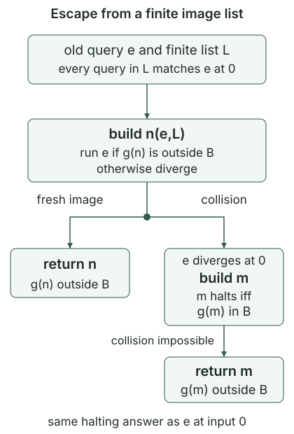

The many-one characterization of creativity says that every creative set receives a computable reduction of halting. To apply Myhill’s theorem, we need an injective reduction. Merely padding the source programs does not prove that their images under a given reduction are distinct.
Use the zero-input halting set \(K_z=\{e:\varphi_e(0)\downarrow\}\), with the established halting conventions. Throughout the construction, fix a set \(C\subseteq\mathbb N\) and a total computable function \(g:\mathbb N\to\mathbb N\) satisfying
No enumerability assumption on \(C\) is needed for this construction. The programs below execute \(g\) and compare finitely many natural numbers. They never test membership in \(C\).
For a finite list \(L\) of indices, let \(B_g(L)=\{g(j):j\text{ occurs in }L\}\), its finite image set. Membership in \(B_g(L)\) is computable: evaluate \(g\) at each entry of the finite list and compare the results. The numerical list coding lets a program accept \(L\) as a parameter.
The list \(L\) is compatible with \(e\) if
Compatibility is a mathematical invariant, rather than a test performed by our algorithm. We will maintain it while adding indices whose images escape the finite image set.
There is a primitive-recursive selector \(n(e,L)\), using the code of \(L\), such that for every input \(z\),
With a proposed self-index \(a\) and parameters \(e,L\), first compute \(g(a)\) and the finitely many values forming \(B_g(L)\). If the image is fresh, simulate \(\varphi_e(z)\). Otherwise run forever. This is a jointly partial recursive procedure: all preliminary numerical tests terminate, and the simulation is universal evaluation.
Apply self-reference for partial families with the paired parameter \(\langle e,\operatorname{code}(L)\rangle\). In the specified parameterized construction, one fixed program index \(q_n\) gives \(n(e,L)=s(q_n,\langle e,\operatorname{code}(L)\rangle)\). Thus a single primitive-recursive selector serves all parameters. The program for the given \(g\) is fixed when this family is chosen; the algorithm does not choose a new fixed point during each later finite scan.
Suppose \(L\) is compatible with \(e\). Put \(n=n(e,L)\). If \(g(n)\notin B_g(L)\), then \(n\in K_z\Longleftrightarrow e\in K_z\). If \(g(n)\in B_g(L)\), then \(e\notin K_z\).
In the fresh case, the first fixed-point identity gives \(\varphi_n(z)\simeq\varphi_e(z)\) on every input, including zero. In the collision case, the identity instead says that \(\varphi_n(0)\) diverges, so \(n\notin K_z\). Choose \(j\) in \(L\) with \(g(n)=g(j)\). The reduction equivalence implies \(j\notin K_z\), since both indices have the same image. Compatibility now implies \(e\notin K_z\).
The algorithm did not decide that \(e\) diverges by simulating it. The conclusion follows from the verified reduction property of \(g\), the collision, and the invariant on the stored list.
There is a primitive-recursive selector \(m(L)\) such that, for every \(z\),
For proposed self-index \(a\), compute the finite test \(g(a)\in B_g(L)\). Return one if it succeeds, and run forever if it fails. This procedure is jointly partial recursive and ignores \(z\). Apply the same partial-family theorem, now with parameter \(\operatorname{code}(L)\), to get one fixed index \(q_m\) and the selector \(m(L)=s(q_m,\operatorname{code}(L))\). Again the selector is primitive recursive even though executing the program for \(g\) may require a general total computable computation.
If \(L\) is compatible with \(e\) and \(g(n(e,L))\in B_g(L)\), then
The preceding collision lemma gives \(e\notin K_z\), and compatibility gives \(j\notin K_z\) for every \(j\) in \(L\). Suppose \(g(m(L))\in B_g(L)\). The second fixed-point identity then makes \(\varphi_{m(L)}(0)\) halt. Hence \(g(m(L))\in C\) by the reduction property.
But some \(j\) in \(L\) has \(g(j)=g(m(L))\). The same reduction property would give \(j\in K_z\), contradicting the previous paragraph. Thus the second image is fresh. Its defining program consequently diverges, giving \(m(L)\notin K_z\) as well.
The escape step is the actual numerical function
It is total computable: compute the two index selectors as needed, execute the finitely many terminating evaluations of \(g\), and select the indicated index. For a compatible list, and give

The escape step guarantees \(T(e,L)\in K_z\Longleftrightarrow e\in K_z\) on compatible lists. Does this guarantee \(\varphi_{T(e,L)}(z)\simeq\varphi_e(z)\) on every input? Explain what the collision branch actually proves.
No. Agreement about definedness at zero is weaker than equality of partial functions. For example, the nowhere-defined function and the partial computable function that returns zero at input one and diverges elsewhere both diverge at zero, but differ at one.
The fresh branch of the first selector does copy \(\varphi_e\) on every input. In the collision branch, the proof establishes that \(e\) diverges at zero and that the returned second program diverges everywhere. This preserves exactly the membership answer required for reducing \(K_z\), regardless of any other inputs on which \(e\) might halt.
For each \(e\), define its query history by
Here \(+\!+\) denotes list concatenation. Define the equivalent-query family by
Consequently \(L_{e,k}=[h(e,0),\ldots,h(e,k)]\). Each step retains the entire old list because freshness must hold against every previous image.
The function \((e,k)\mapsto h(e,k)\) is total computable. For all \(e,k\),
and, for each fixed \(e\), the values \(g(h(e,k))\) are pairwise distinct as \(k\) varies.
To compute \(h(e,k)\), start with the list \([e]\) and perform the stated finite number of escape steps, using the numerical code of the growing list. The escape step is total computable, so finite recursion computes this history and its last entry. This is the ordinary computable version of recursion retaining earlier values; it does not require the computations \(\varphi_{h(e,i)}(0)\) to terminate.
Inductively, \(L_{e,k}\) is compatible with \(e\), and its entries have pairwise distinct \(g\)-images. Both assertions hold for the initial singleton. At the next step, the escape-step guarantee puts the new image outside all old images and makes the new query agree with \(e\) about halting at zero. Appending this index preserves compatibility and pairwise distinctness. The assertions therefore hold at every finite stage.
Let \(F\) be any finite list of natural numbers, with repetitions allowed. Define
The minimum exists. The map \((e,F)\mapsto r(e,F)\) is total computable and satisfies
The \(|F|+1\) numbers \(g(h(e,0)),\ldots,g(h(e,|F|))\) are distinct by . A list of length \(|F|\) cannot contain all of them. Thus at least one of the bounded candidates is outside \(F\), so the least such position exists.
Compute the candidates in order and stop at the first one outside the finite list. There are at most \(|F|+1\) candidates, and every evaluation and comparison terminates. This proves total computability, without asserting primitive recursiveness of computations involving the given \(g\). The chosen image is fresh by its defining test. The family invariant followed by the reduction property gives \(e\in K_z\Longleftrightarrow h(e,a(e,F))\in K_z\Longleftrightarrow r(e,F)\in C\).
Define the output history and the specified injective replacement \(b\) simultaneously by
Thus \(F_e=[b(0),\ldots,b(e-1)]\). This is an ordinary recursion on the input \(e\). The algorithm computes the earlier outputs first; it does not search for an arbitrary unspecified one-one reduction.
For every set \(C\subseteq\mathbb N\) and every total computable \(g\) reducing \(K_z\) to \(C\), the specified map \(b\) is total computable and injective, and
In particular, \(K_z\le_m C\) implies \(K_z\le_1 C\).
The map \(r\) is total computable on every input and every finite forbidden list, so finite recursion computes \(F_e\) and then \(b(e)\). The avoidance lemma gives \(b(e)\notin F_e\). If \(i<e\), the definition of the history puts \(b(i)\) in \(F_e\), so \(b(e)\ne b(i)\). This proves injectivity. The same avoidance lemma gives the required membership equivalence for each \(e\).
The construction uses a supplied program for \(g\), the two fixed family-program indices \(q_n,q_m\), the established self-reference selector, and finite numerical histories. With these choices fixed, the displayed recurrences specify one ordinary computable map \(b\). No recognizer, decision procedure, or oracle for \(C\) enters its computation.
For a c.e. set \(C\), the following are equivalent: \(C\) is creative; every c.e. set \(A\) satisfies \(A\le_1 C\); and \(K\le_1 C\), where \(K=\{e:\varphi_e(e)\downarrow\}\).
Suppose \(C\) is creative. Its existing characterization supplies a total computable reduction \(q:K\to C\). Recall the specified injective halting recodings, using the same constant-run map \(c\) established there:
Apply to \(g=q\circ\alpha\), obtaining the specified injective reduction \(b:K_z\to C\). Then \(b\circ\beta\) witnesses \(K\le_1 C\). Every c.e. \(A\) has the specified injective reduction to \(K\); composing it with \(b\circ\beta\) gives \(A\le_1C\).
Conversely, receiving every c.e. set injectively includes receiving the c.e. set \(K\). A one-one reduction is also a many-one reduction. Thus \(K\le_1C\), together with the stated c.e. hypothesis, implies creativity by the existing characterization. This completes all implications.
A set \(C\subseteq\mathbb N\) is creative if and only if it is computably isomorphic to \(K\). More explicitly, if \(C\) is creative, the specified finite-matching construction of Myhill gives total computable functions \(H,J\) satisfying
Thus \(H\) is a computable permutation taking \(C\) to \(K\), and \(J\) is its computable inverse.
If \(C\) is creative, choose a c.e. index \(a\) with \(W_a=C\). The actual map \(i_a(x)=c(\langle a,x\rangle)\) from injective halting completeness reduces \(C\) injectively to \(K\). The preceding proof supplies the reverse injective reduction \(b\circ\beta:K\to C\).
Use these two maps, in this order, as the input injections for Myhill’s specified alternating finite-matching algorithm, with the membership labels for \(C\) on the left and \(K\) on the right. It computes the permutation \(H\) and the reverse map \(J\). Label preservation gives the displayed membership equivalence, and the two established inverse identities give the other displayed assertions. In particular, these are computable maps produced from the injections, rather than an appeal to an arbitrary set-theoretic bijection.
Conversely, let \(H\) be a computable permutation with \(x\in C\Longleftrightarrow H(x)\in K\). Since \(K\) is c.e., its computable preimage \(C\) is c.e. The computable inverse \(J\) reduces \(K\) to \(C\): substitute \(x=J(y)\) in the membership equivalence. Hence \(C\) is c.e. and receives \(K\) many-one, so the creative-set characterization applies.
If \(C,D\subseteq\mathbb N\) are creative, there is a computable permutation taking \(C\) to \(D\), with computable inverse.
Apply the preceding theorem to obtain \(H_C:C\to K\) and \(H_D:D\to K\), together with their total computable inverses \(J_C,J_D\). Here the arrows describe the preserved membership predicates; all four maps have domain \(\mathbb N\). The composition \(P=J_D\circ H_C\) is total computable, and \(Q=J_C\circ H_D\) is its inverse by the two inverse identities. The membership equivalences give \(x\in C\Longleftrightarrow H_C(x)\in K\Longleftrightarrow P(x)\in D\). Thus \(P\) is the required permutation and \(Q\) computes its inverse.
Suppose only that \(K\le_1D\). Must \(D\) be creative, or computably isomorphic to \(K\)? Revisit the parity example
The total computable map \(n\mapsto2n\) is injective and satisfies \(n\in K\Longleftrightarrow2n\in D\). Thus \(K\le_1D\). Nevertheless \(D\) is not c.e.: its preimage under the total computable map \(n\mapsto2n+1\) is \(\overline K\), which is not c.e. Therefore \(D\) is not creative.
It also cannot be computably isomorphic to \(K\), since any such isomorphism would express \(D\) as a computable preimage of the c.e. set \(K\). The injective upgrade proved above makes no claim that its target is enumerable. Enumerability enters when we also need a reduction in the reverse direction to obtain an isomorphism.